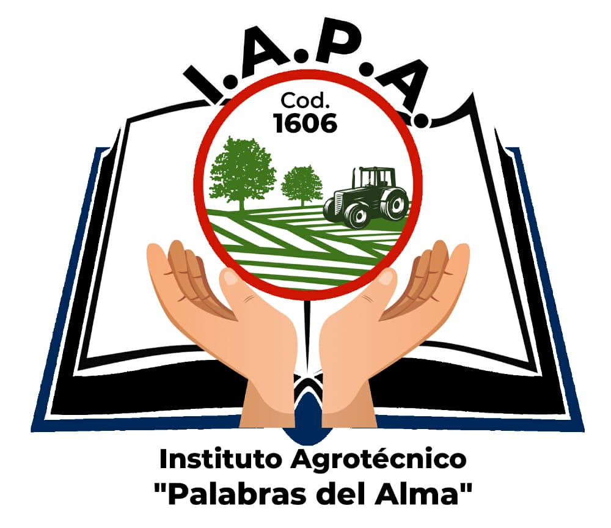

Estación Meteorológica IAPA
Pozo Azul · Misiones · Instituto Agrotécnico “Palabras del Alma”
Conectando…
Datos meteorológicosConsultando las mediciones guardadas en la base de datos. No se mostrarán valores simulados.
Información meteorológica local
El tiempo en nuestra comunidad.
Un espacio de consulta de la Estación Meteorológica IAPA para la comunidad, productores, trabajadores y actividades al aire libre. Revisá siempre la hora de la última medición.
🌡️
Temperatura
— °C
Lectura del sensor
💧
Humedad
— %
Humedad relativa
📈
Presión atmosférica
— hPa
Presión local
☀️
Índice UV
—
Indicador orientativo
🌬️
Velocidad del viento
— km/h
Velocidad medida
🌫️
Calidad del aire
—
Lectura orientativa del MQ-135; no es una medición certificada
🌧️
Probabilidad estimada de lluvia
— %
Estimación IAPA, no pronóstico oficial
☔
Precipitación acumulada
No disponible
Requiere pluviómetro y envío del dato
Buscando mediciones reales…
🌧️ Sobre la lluvia
Estimación experimentalLa probabilidad de lluvia es una estimación propia calculada a partir de los sensores; no equivale a un pronóstico oficial. La precipitación en milímetros requiere un pluviómetro.
🌱 Información para el campo
Usá las mediciones como referencia orientativa y consultá también los pronósticos y alertas oficiales.
Última medición: Todavía no disponible
🛰️ Seguimiento meteorológico complementario
Compará las mediciones locales con mapas meteorológicos regionales. Las fuentes externas son complementarias y no reemplazan los datos de la estación.